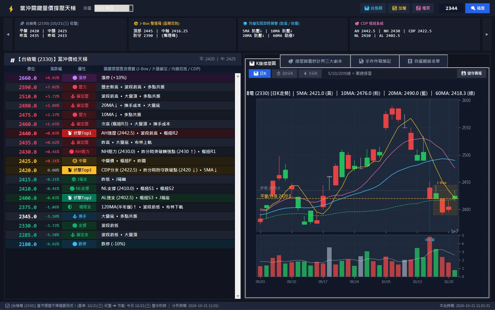

AI 投資作戰系統 ・ 作品徵選 2026
當沖撐壓孔明錦囊
開盤之前， 先拆開三個錦囊。
把一檔股票今天會遇到的每一個關鍵價位，精算到最小跳動檔位；三個伏擊位、三個劇本，開盤前就備好。你只需要在對的位置，等。
劇本 A
開高突破
開高突破
劇本 B
平盤震盪
平盤震盪
劇本 C
開低破線
開低破線
台積電 2330 ・ 當沖天梯 2026-10-21 盤中快照
REAL DATA ・ 由本系統引擎實算
壓力
樞紐
支撐
伏擊位
三十秒看懂
一檔股票，一座天梯，三個等待的位置。
當沖最難的不是看對方向，而是「在哪裡出手」。這套系統把證交所的跳動檔位、CDP 五價、樞紐、均線扣抵、J-Box 整理箱、爆量換手區全部疊在同一把尺上，從漲停到跌停排成一座天梯，再從中挑出共振最強的三個點，當作今天唯一允許扣板機的位置。看不懂的字，滑過去就有解釋。
01
精算到檔位
嚴格依證交所六級跳動檔位（0.01 到 5 元）對齊，每一階都是真的掛得出去的價格，不是概念上的「差不多」。
02
三大伏擊位
上方極限獵殺位、下方黃金吸籌位、多空決戰生死嶺。三個點各有理由、SOP 與防守，沒到位置就把手綁起來。
03
三個劇本
開高突破、平盤震盪、開低破線。開盤那一刻只會發生其中一種，拆對的那個錦囊，照著做。
0檔
台股全市場名稱對照
0階
今日台積電天梯（實算）
0級
跳動檔位規則
0封
伏擊位與劇本

左手天梯，右手撐壓圖。上方四張卡片是今天的決策摘要：平盤與昨高昨低、J-Box 箱體、均線扣抵預警、CDP 五價。